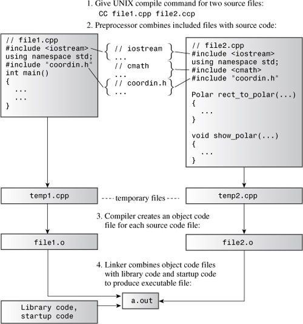
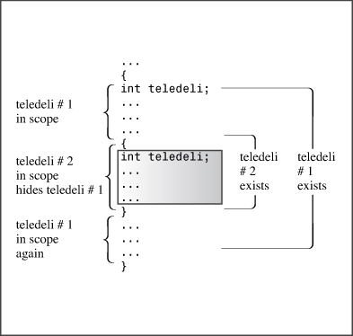
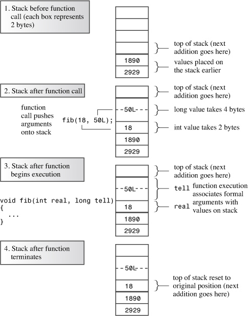
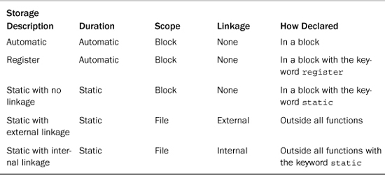
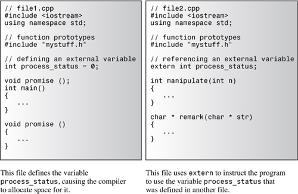
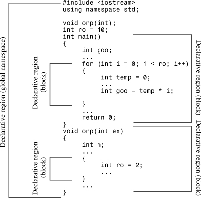
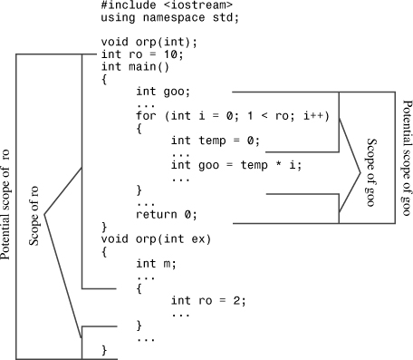

In this chapter you’ll learn about the following:
• Separate compilation of programs
• Storage duration, scope, and linkage
• Placement new
• Namespaces
C++ offers many choices for storing data in memory. You have choices for how long data remains in memory (storage duration) and choices for which parts of a program have access to data (scope and linkage). You can allocate memory dynamically by using new, and placement new offers a variation on that technique. The C++ namespace facility provides additional control over access. Larger programs typically consist of several source code files that may share some data in common. Such programs involve the separate compilation of the program files, and this chapter begins with that topic.
C++, like C, allows and even encourages you to locate the component functions of a program in separate files. As Chapter 1, “Getting Started with C++,” describes, you can compile the files separately and then link them into the final executable program. (A C++ compiler typically compiles programs and also manages the linker program.) If you modify just one file, you can recompile just that one file and then link it to the previously compiled versions of the other files. This facility makes it easier to manage large programs. Furthermore, most C++ environments provide additional facilities to help with the management. Unix and Linux systems, for example, have make programs, which keep track of which files a program depends on and when they were last modified. If you run make, and it detects that you’ve changed one or more source files since the last compilation, make remembers the proper steps needed to reconstitute the program. Most integrated development environments (IDEs), including Embarcadero C++ Builder, Microsoft Visual C++, Apple Xcode, and Freescale CodeWarrior, provide similar facilities with their Project menus.
Let’s look at a simple example. Instead of looking at compilation details, which depend on the implementation, let’s concentrate on more general aspects, such as design.
Suppose, for example, that you decide to break up the program in Listing 7.12 by placing the two supporting functions in a separate file. Recall that Listing 7.12 converts rectangular coordinates to polar coordinates and then displays the result. You can’t simply cut the original file on a dotted line after the end of main(). The problem is that main() and the other two functions use the same structure declarations, so you need to put the declarations in both files. Simply typing them in is an invitation to error. Even if you copy the structure declarations correctly, you have to remember to modify both sets of declarations if you make changes later. In short, spreading a program over multiple files creates new problems.
Who wants more problems? The developers of C and C++ didn’t, so they’ve provided the #include facility to deal with this situation. Instead of placing the structure declarations in each file, you can place them in a header file and then include that header file in each source code file. That way, if you modify the structure declaration, you can do so just once, in the header file. Also you can place the function prototypes in the header file. Thus, you can divide the original program into three parts:
• A header file that contains the structure declarations and prototypes for functions that use those structures
• A source code file that contains the code for the structure-related functions
• A source code file that contains the code that calls the structure-related functions
This is a useful strategy for organizing a program. If, for example, you write another program that uses those same functions, you can just include the header file and add the functions file to the project or make list. Also this organization is consistent with the OOP approach. One file, the header file, contains the definition of the user-defined types. A second file contains the function code for manipulating the user-defined types. Together, they form a package you can use for a variety of programs.
You shouldn’t put function definitions or variable declarations into a header file. That might work for a simple setup but usually it leads to trouble. For example, if you had a function definition in a header file and then included the header file in two other files that are part of a single program, you’d wind up with two definitions of the same function in a single program, which is an error, unless the function is inline. Here are some things commonly found in header files:
• Function prototypes
• Symbolic constants defined using #define or const
• Structure declarations
• Class declarations
• Inline functions
It’s okay to put structure declarations in a header file because they don’t create variables; they just tell the compiler how to create a structure variable when you declare one in a source code file. Similarly, template declarations aren’t code to be compiled; they are instructions to the compiler on how to generate function definitions to match function calls found in the source code. Data declared const and inline functions have special linkage properties (described shortly) that allow them to be placed in header files without causing problems.
Listings 9.1, 9.2, and 9.3 show the result of dividing Listing 7.12 into separate parts. Note that you use "coordin.h" instead of <coordin.h> when including the header file. If the filename is enclosed in angle brackets, the C++ compiler looks at the part of the host system’s file system that holds the standard header files. But if the filename is enclosed in double quotation marks, the compiler first looks at the current working directory or at the source code directory (or some such choice, depending on the compiler). If it doesn’t find the header file there, it then looks in the standard location. So you should use quotation marks, not angle brackets, when including your own header files.
Figure 9.1 outlines the steps for putting this program together on a Unix system. Note that you just give the CC compile command, and the other steps follow automatically. The g++ and gpp command-line compilers and the Borland C++ command-line compiler (bcc32.exe) also behave that way. Apple Xcode, Embarcadero C++ Builder, and Microsoft Visual C++ go through essentially the same steps, but, as outlined in Chapter 1, you initiate the process differently, using menus that let you create a project and associate source code files with it. Note that you only add source code files, not header files, to projects. That’s because the #include directive manages the header files. Also you shouldn’t use #include to include source code files because that can lead to multiple declarations.
Figure 9.1. Compiling a multifile C++ program on a Unix system.

In IDEs, don’t add header files to the project list and don’t use #include to include source code files in other source code files.
// coordin.h -- structure templates and function prototypes
// structure templates
#ifndef COORDIN_H_
#define COORDIN_H_
struct polar
{
double distance; // distance from origin
double angle; // direction from origin
};
struct rect
{
double x; // horizontal distance from origin
double y; // vertical distance from origin
};
// prototypes
polar rect_to_polar(rect xypos);
void show_polar(polar dapos);
#endif
// file1.cpp -- example of a three-file program
#include <iostream>
#include "coordin.h" // structure templates, function prototypes
using namespace std;
int main()
{
rect rplace;
polar pplace;
cout << "Enter the x and y values: ";
while (cin >> rplace.x >> rplace.y) // slick use of cin
{
pplace = rect_to_polar(rplace);
show_polar(pplace);
cout << "Next two numbers (q to quit): ";
}
cout << "Bye!\n";
return 0;
}
// file2.cpp -- contains functions called in file1.cpp
#include <iostream>
#include <cmath>
#include "coordin.h" // structure templates, function prototypes
// convert rectangular to polar coordinates
polar rect_to_polar(rect xypos)
{
using namespace std;
polar answer;
answer.distance =
sqrt( xypos.x * xypos.x + xypos.y * xypos.y);
answer.angle = atan2(xypos.y, xypos.x);
return answer; // returns a polar structure
}
// show polar coordinates, converting angle to degrees
void show_polar (polar dapos)
{
using namespace std;
const double Rad_to_deg = 57.29577951;
cout << "distance = " << dapos.distance;
cout << ", angle = " << dapos.angle * Rad_to_deg;
cout << " degrees\n";
}
Compiling and linking these two source code files along with the new header file produces an executable program. Here is a sample run:
Enter the x and y values: 120 80
distance = 144.222, angle = 33.6901 degrees
Next two numbers (q to quit): 120 50
distance = 130, angle = 22.6199 degrees
Next two numbers (q to quit): q
By the way, although we’ve discussed separate compilation in terms of files, the C++ Standard uses the term translation unit instead of file in order to preserve greater generality; the file metaphor is not the only possible way to organize information for a computer. For simplicity, this book will use the term file, but feel free to translate that to translation unit.
Now that you’ve seen a multifile program, it’s a good time to extend the discussion of memory schemes in Chapter 4, “Compound Types,” because storage categories affect how information can be shared across files. It might have been a while since you last read Chapter 4, so let’s review what it says about memory. C++ uses three separate schemes (four under C++11) for storing data, and the schemes differ in how long they preserve data in memory:
• Automatic storage duration— Variables declared inside a function definition—including function parameters—have automatic storage duration. They are created when program execution enters the function or block in which they are defined, and the memory used for them is freed when execution leaves the function or block. C++ has two kinds of automatic storage duration variables.
• Static storage duration— Variables defined outside a function definition or else by using the keyword static have static storage duration. They persist for the entire time a program is running. C++ has three kinds of static storage duration variables.
• Thread storage duration (C++11)— These days multicore processors are common. These are CPUs that can handle several execution tasks simultaneously. This allows a program to split computations into separate threads that can be processed concurrently. Variables declared with the thread_local keyword have storage that persists for as long as the containing thread lasts. This book does not venture into concurrent programming.
• Dynamic storage duration— Memory allocated by the new operator persists until it is freed with the delete operator or until the program ends, whichever comes first. This memory has dynamic storage duration and sometimes is termed the free store or the heap.
You’ll get the rest of the story now, including fascinating details about when variables of different types are in scope, or visible (that is, usable by the program), and about linkage, which determines what information is shared across files.
Scope describes how widely visible a name is in a file (translation unit). For example, a variable defined in a function can be used in that function but not in another, whereas a variable defined in a file above the function definitions can be used in all the functions. Linkage describes how a name can be shared in different units. A name with external linkage can be shared across files, and a name with internal linkage can be shared by functions within a single file. Names of automatic variables have no linkage because they are not shared.
A C++ variable can have one of several scopes. A variable that has local scope (also termed block scope) is known only within the block in which it is defined. Recall that a block is a series of statements enclosed in braces. A function body, for example, is a block, but you can have other blocks nested within the function body. A variable that has global scope (also termed file scope) is known throughout the file after the point where it is defined. Automatic variables have local scope, and a static variable can have either scope, depending on how it is defined. Names used in a function prototype scope are known just within the parentheses enclosing the argument list. (That’s why it doesn’t really matter what they are or if they are even present.) Members declared in a class have class scope (see Chapter 10, “Objects and Classes”). Variables declared in a namespace have namespace scope. (Now that namespaces have been added to the C++ language, the global scope has become a special case of namespace scope.)
C++ functions can have class scope or namespace scope, including global scope, but they can’t have local scope. (Because a function can’t be defined inside a block, if a function were to have local scope, it could only be known to itself and hence couldn’t be called by another function. Such a function couldn’t function.)
The various C++ storage choices are characterized by their storage duration, their scope, and their linkage. Let’s look at C++’s storage classes in terms of these properties. We begin by examining the situation before namespaces were added to the mix and then see how namespaces modify the picture.
Function parameters and variables declared inside a function have, by default, automatic storage duration. They also have local scope and no linkage. That is, if you declare a variable called texas in main() and you declare another variable with the same name in a function called oil(), you’ve created two independent variables, each known only in the function in which it’s defined. Anything you do to the texas in oil() has no effect on the texas in main(), and vice versa. Also each variable is allocated when program execution enters the innermost block containing the definition, and each fades from existence when execution leaves that block. (Note that the variable is allocated when execution enters the block, but the scope begins only after the point of declaration.)
If you define a variable inside a block, the variable’s persistence and scope are confined to that block. Suppose, for example, that you define a variable called teledeli at the beginning of main(). Now suppose you start a new block within main() and define a new variable, called websight, in the block. Then, teledeli is visible in both the outer and inner blocks, whereas websight exists only in the inner block and is in scope only from its point of definition until program execution passes the end of the block:
int main()
{
int teledeli = 5;
{ // websight allocated
cout << "Hello\n";
int websight = -2; // websight scope begins
cout << websight << ' ' << teledeli << endl;
} // websight expires
cout << teledeli << endl;
...
} // teledeli expires
But what if you name the variable in the inner block teledeli instead of websight so that you have two variables of the same name, with one in the outer block and one in the inner block? In this case, the program interprets the teledeli name to mean the local block variable while the program executes statements within the block. We say the new definition hides the prior definition. The new definition is in scope, and the old definition is temporarily out of scope. When the program leaves the block, the original definition comes back into scope (see Figure 9.2).

Listing 9.4 illustrates how automatic variables are localized to the functions or blocks that contain them.
// autoscp.cpp -- illustrating scope of automatic variables
#include <iostream>
void oil(int x);
int main()
{
using namespace std;
int texas = 31;
int year = 2011;
cout << "In main(), texas = " << texas << ", &texas = ";
cout << &texas << endl;
cout << "In main(), year = " << year << ", &year = ";
cout << &year << endl;
oil(texas);
cout << "In main(), texas = " << texas << ", &texas = ";
cout << &texas << endl;
cout << "In main(), year = " << year << ", &year = ";
cout << &year << endl;
return 0;
}
void oil(int x)
{
using namespace std;
int texas = 5;
cout << "In oil(), texas = " << texas << ", &texas = ";
cout << &texas << endl;
cout << "In oil(), x = " << x << ", &x = ";
cout << &x << endl;
{ // start a block
int texas = 113;
cout << "In block, texas = " << texas;
cout << ", &texas = " << &texas << endl;
cout << "In block, x = " << x << ", &x = ";
cout << &x << endl;
} // end a block
cout << "Post-block texas = " << texas;
cout << ", &texas = " << &texas << endl;
}
Here is the output from the program in Listing 9.4:
In main(), texas = 31, &texas = 0012FED4
In main(), year = 2011, &year = 0012FEC8
In oil(), texas = 5, &texas = 0012FDE4
In oil(), x = 31, &x = 0012FDF4
In block, texas = 113, &texas = 0012FDD8
In block, x = 31, &x = 0012FDF4
Post-block texas = 5, &texas = 0012FDE4
In main(), texas = 31, &texas = 0012FED4
In main(), year = 2011, &year = 0012FEC8
Notice that each of the three texas variables in Listing 9.4 has its own distinct address and that the program uses only the particular variable in scope at the moment, so assigning the value 113 to the texas in the inner block in oil() has no effect on the other variables of the same name. (As usual, the actual address values and address format will differ from system to system.)
Let’s summarize the sequence of events. When main() starts, the program allocates space for texas and year, and these variables come into scope. When the program calls oil(), these variables remain in memory but pass out of scope. Two new variables, x and texas, are allocated and come into scope. When program execution reaches the inner block in oil(), the new texas passes out of scope (is hidden) because it is superseded by an even newer definition. The variable x, however, stays in scope because the block doesn’t define a new x. When execution exits the block, the memory for the newest texas is freed, and texas #2 comes back into scope. When the oil() function terminates, that texas and x expire, and the original texas and year come back into scope.
You can initialize an automatic variable with any expression whose value will be known when the declaration is reached. The following example shows the variables x, big, y, and z being initialized:
int w; // value of w is indeterminate
int x = 5; // initialized with a numeric literal
int big = INT_MAX – 1; // initialized with a constant expression
int y = 2 * x; // use previously determined value of x
cin >> w;
int z = 3 * w; // use new value of w
You might gain a better understanding of automatic variables if you look at how a typical C++ compiler implements them. Because the number of automatic variables grows and shrinks as functions start and terminate, the program has to manage automatic variables as it runs. The usual means is to set aside a section of memory and treat it as a stack for managing the flow and ebb of variables. It’s called a stack because new data is figuratively stacked atop old data (that is, at an adjacent location, not at the same location) and then removed from the stack when a program is finished with it. The default size of the stack depends on the implementation, but a compiler typically provides the option of changing the size. The program keeps track of the stack by using two pointers. One points to the base of the stack, where the memory set aside for the stack begins, and one points to the top of the stack, which is the next free memory location. When a function is called, its automatic variables are added to the stack, and the pointer to the top points to the next available free space following the variables. When the function terminates, the top pointer is reset to the value it had before the function was called, effectively freeing the memory that had been used for the new variables.
A stack is a LIFO (last-in, first-out) design, meaning the last variables added to the stack are the first to go. The design simplifies argument passing. The function call places the values of its arguments on top of the stack and resets the top pointer. The called function uses the description of its formal parameters to determine the addresses of each argument. For example, Figure 9.3 shows a fib() function that, when called, passes a 2-byte int and a 4-byte long. These values go on the stack. When fib() begins execution, it associates the names real and tell with the two values. When fib() terminates, the top-of-stack pointer is relocated to its former position. The new values aren’t erased, but they are no longer labeled, and the space they occupy will be used by the next process that places values on the stack. (Figure 9.3 is somewhat simplified because function calls may pass additional information, such as a return address.)
Figure 9.3. Passing arguments by using a stack.

C originally introduced the register keyword to suggest that the compiler use a CPU register to store an automatic variable:
register int count_fast; // request for a register variable
The idea was that this would allow faster access to the variable.
Prior to C++11, C++ used the keyword in the same fashion, except that as hardware and compilers developed in sophistication, the hint was generalized to mean that the variable was heavily used and perhaps the compiler could provide some sort of special treatment. With C++11, even that hint is being deprecated, leaving register as just a way to explicitly identify a variable as being automatic. Given that register can only be used with variables that would be automatic anyway, one reason to use this keyword is to indicate that you really do want to use an automatic variable, perhaps one with the same name as an external variable. This is the same purpose the original use of auto served. The more important reason for retaining register, however, is to avoid invalidating existing code that uses that keyword.
C++, like C, provides static storage duration variables with three kinds of linkage: external linkage (accessible across files), internal linkage (accessible to functions within a single file), and no linkage (accessible to just one function or to one block within a function). All three last for the duration of the program; they are less ephemeral than automatic variables. Because the number of static variables doesn’t change as the program runs, the program doesn’t need a special device such as a stack to manage them. Instead, the compiler allocates a fixed block of memory to hold all the static variables, and those variables stay present as long as the program executes. Also if you don’t explicitly initialize a static variable, the compiler sets it to 0. Static arrays and structures have all the bits of each element or member set to 0 by default.
Classic K&R C does not allow you to initialize automatic arrays and structures, but it does allow you to initialize static arrays and structures. ANSI C and C++ allow you to initialize both kinds. But some older C++ translators use C compilers that are not fully ANSI C-compliant. If you are using such an implementation, you might need to use one of the three varieties of static storage classes for initializing arrays and structures.
Let’s look at how to create the three different kinds of static duration variables; then we can go on to examine their properties. To create a static duration variable with external linkage, you declare it outside any block. To create a static duration variable with internal linkage, you declare it outside any block and use the static storage class modifier. To create a static duration variable with no linkage, you declare it inside a block, using the static modifier. The following code fragment shows these three variations:
...
int global = 1000; // static duration, external linkage
static int one_file = 50; // static duration, internal linkage
int main()
{
...
}
void funct1(int n)
{
static int count = 0; // static duration, no linkage
int llama = 0;
...
}
void funct2(int q)
{
...
}
As stated previously, all the static duration variables (global, one_file, and count, in this example) persist from the time the program begins execution until it terminates. The variable count, which is declared inside funct1(), has local scope and no linkage, which means it can be used only inside the funct1() function, just like the automatic variable llama. But unlike llama, count remains in memory even when the funct1() function is not being executed. Both global and one_file have file scope, meaning they can be used from the point of declaration until the end of the file. In particular, both can be used in main(), funct1(), and funct2(). Because one_file has internal linkage, it can be used only in the file containing this code. Because global has external linkage, it also can be used in other files that are part of the program.
All static duration variables share the following initialization feature: An uninitialized static variable has all its bits set to 0. Such a variable is said to be zero-initialized.
Table 9.1 summarizes the storage class features as used in the pre-namespace era. Next, we’ll examine the static duration varieties in more detail.
Table 9.1. The Five Kinds of Variable Storage

Note that the keyword static has somewhat different meanings in the two uses shown in Table 9.1. When used with a local declaration to indicate a static variable with no linkage, static indicates the kind of storage duration. When used with a declaration outside of a block, static indicates internal linkage; the variable already has static duration. One might term this keyword overloading, with the precise meaning determined by context.
Static variables may be zero-initialized, they may undergo constant expression initialization, and they may undergo dynamic initialization. As you may have surmised, zero-initialization means setting the variable to the value zero. For scalar types, the zero is type cast to the appropriate type. For example, the null pointer, which is represented by 0 in C++ code, may have a nonzero internal representation, so a pointer variable would be initialized to that value. Structure members are zero-initialized, and any padding bits are set to zero.
Zero-initialization and constant-expression initialization collectively are called static initialization. This means the variable is initialized when the compiler processes the file (or translation unit). Dynamic initialization means the variable is initialized later.
So what determines which form of initialization takes place? First of all, all static variables are zero-initialized, whether or not any initialization is indicated. Next, if the variable is initialized using a constant expression that the compiler can evaluate solely from the file contents (including included header files), it can perform constant-expression initialization. The compiler is prepared to do simple calculations if needed. If there’s not enough information at this time, the variable will be dynamically initialized. Consider the following:
#include <cmath>
int x; // zero-initialization
int y = 5; // constant-expression initialization
long z = 13 * 13; // constant-expression initialization
const double pi = 4.0 * atan(1.0); // dynamic initialization
First, x, y, z, and pi are zero-initialized. Then the compiler evaluates the constant expressions and initializes y and z to 5 and 169, respectively. But initializing pi requires calling the atan() function, and this has to wait until the function is linked and the program executes.
A constant expression is not limited to arithmetic expressions using literal constants. It can, for example, use the sizeof operator:
int enough = 2 * sizeof (long) + 1; // constant expression initialization
C++11 introduces a new keyword, constexpr, to expand the options for creating constant expressions; this is one of the new C++11 features that this book does not pursue further.
Variables with external linkage are often simply called external variables. They necessarily have static storage duration and file scope. External variables are defined outside, and hence external to, any function. For example, they could be declared above the main() function or in a header file. You can use an external variable in any function that follows the external variable’s definition in the file. Thus, external variables are also termed global variables, in contrast to automatic variables, which are local variables.
On the one hand, an external variable has to be declared in each file that uses the variable. On the other hand, C++ has the “one definition rule” (also known as odr), which states that there can be only one definition of a variable. To satisfy these requirements, C++ has two kinds of variable declarations. One is the defining declaration or, simply, a definition. It causes storage for the variable to be allocated. The second is the referencing declaration or, simply, a declaration. It does not cause storage to be allocated because it refers to an existing variable.
A referencing declaration uses the keyword extern and does not provide initialization. Otherwise, a declaration is a definition and causes storage to be allocated:
double up; // definition, up is 0
extern int blem; // blem defined elsewhere
extern char gr = 'z'; // definition because initialized
If you use an external variable in several files, only one file can contain a definition for that variable (per the one definition rule). But every other file using the variable needs to declare that variable using the keyword extern:
// file01.cpp
extern int cats = 20; // definition because of initialization
int dogs = 22; // also a definition
int fleas; // also a definition
...
// file02.cpp
// use cats and dogs from file01.cpp
extern int cats; // not definitions because they use
extern int dogs; // extern and have no initialization
...
// file98.cpp
// use cats, dogs, and fleas from file01.cpp
extern int cats;
extern int dogs;
extern int fleas;
...
In this case, all the files use the cats and dogs variables defined in file01.cpp. However, file02.cpp doesn’t re-declare the fleas variable, so it can’t access it. The extern in file01.cpp isn’t really needed because the effect is the same if it is omitted (also see Figure 9.4).
Figure 9.4. Defining declaration and referencing declaration.

Note that the one definition rule doesn’t mean that there can be only one variable with a given name. For example, automatic variables sharing the same name but defined in different functions are separate variables, independent of one another, and each having its own address. Also as later examples show, a local variable can hide a global variable of the same name. However, although a program can have different variables of the same name, each version can have only one definition.
What if you define an external variable and then declare a variable by the same name inside a function? The second declaration is interpreted as a definition for an automatic variable. The automatic variable is the one that is in scope when the program executes that particular function. Listings 9.5 and 9.6, to be compiled together, illustrate using an external variable in two files and how an automatic variable hides a global variable of the same name. The program also shows how you can use the keyword extern to re-declare an external variable defined earlier and how you can use C++’s scope-resolution operator to access an otherwise hidden external variable.
// external.cpp -- external variables
// compile with support.cpp
#include <iostream>
using namespace std;
// external variable
double warming = 0.3; // warming defined
// function prototypes
void update(double dt);
void local();
int main() // uses global variable
{
cout << "Global warming is " << warming << " degrees.\n";
update(0.1); // call function to change warming
cout << "Global warming is " << warming << " degrees.\n";
local(); // call function with local warming
cout << "Global warming is " << warming << " degrees.\n";
return 0;
}
// support.cpp -- use external variable
// compile with external.cpp
#include <iostream>
extern double warming; // use warming from another file
// function prototypes
void update(double dt);
void local();
using std::cout;
void update(double dt) // modifies global variable
{
extern double warming; // optional redeclaration
warming += dt; // uses global warming
cout << "Updating global warming to " << warming;
cout << " degrees.\n";
}
void local() // uses local variable
{
double warming = 0.8; // new variable hides external one
cout << "Local warming = " << warming << " degrees.\n";
// Access global variable with the
// scope resolution operator
cout << "But global warming = " << ::warming;
cout << " degrees.\n";
}
Here is the output from the program:
Global warming is 0.3 degrees.
Updating global warming to 0.4 degrees.
Global warming is 0.4 degrees.
Local warming = 0.8 degrees.
But global warming = 0.4 degrees.
Global warming is 0.4 degrees.
The output of the program in Listings 9.5 and 9.6 illustrates that both main() and update() can access the external variable warming. Note that the change that update() makes to warming shows up in subsequent uses of the variable.
The definition for warming is in Listing 9.5:
double warming = 0.3; // warming defined
Listing 9.6 uses extern to make the warming variable available to the functions in that file:
extern double warming; // use warming from another file
As the comment indicates, this declaration says, “Use the warming variable defined externally elsewhere.”
In addition, the update() function re-declares the warming variable by using the keyword extern. This keyword means “Use the variable by this name previously defined externally.” Because that is what update() would do anyway if you omitted the entire declaration, this declaration is optional. It serves to document that the function is designed to use the external variable.
The local() function demonstrates that when you define a local variable that has the same name as a global variable, the local version hides the global version. The local() function, for example, uses the local definition of warming when it displays the value of warming.
C++ goes a step beyond C by offering the scope-resolution operator (::). When it is prefixed to the name of a variable, this operator means to use the global version of that variable. Thus, local() displays warming as 0.8, but it displays ::warming as 0.4. You’ll encounter this operator again in namespaces and classes. In terms of clarity and error-avoidance, it would have been better and safer to use ::warming in the update() function instead of using just warming and relying on scope rules.
Applying the static modifier to a file-scope variable gives it internal linkage. The difference between internal linkage and external linkage becomes meaningful in multifile programs. In that context, a variable with internal linkage is local to the file that contains it. But a regular external variable has external linkage, meaning that it can be used in different files, as the previous example showed.
What if you want to use the same name to denote different variables in different files? Can you just omit the extern?
// file1
int errors = 20; // external declaration
...
---------------------------------------------
// file2
int errors = 5; // ??known to file2 only??
void froobish()
{
cout << errors; // fails
...
No, this attempt fails because it violates the one definition rule. The file2 definition attempts to create an external variable, so the program winds up with two definitions of errors, which is an error.
But if a file declares a static external variable that has the same name as an ordinary external variable declared in another file, the static version is the one in scope for that file:
// file1
int errors = 20; // external declaration
...
---------------------------------------------
// file2
static int errors = 5; // known to file2 only
void froobish()
{
cout << errors; // uses errors defined in file2
...
This doesn’t violate the one definition rule because the keyword static establishes that the identifier errors has internal linkage, so no attempt is made to bring in an external definition.
In a multifile program, you can define an external variable in one and only one file. All other files using that variable have to declare that variable with the extern keyword.
You can use an external variable to share data among different parts of a multifile program. You can use a static variable with internal linkage to share data among functions found in just one file. (Namespaces offer an alternative method for this.) Also if you make a file-scope variable static, you needn’t worry about its name conflicting with file-scope variables found in other files.
Listings 9.7 and 9.8 show how C++ handles variables with external and internal linkage. Listing 9.7 (twofile1.cpp) defines the external variables tom and dick and the static external variable harry. The main() function in that file displays the addresses of the three variables and then calls the remote_access() function, which is defined in a second file. Listing 9.8 (twofile2.cpp) shows that file. In addition to defining remote_access(), the file uses the extern keyword to share tom with the first file. Next, the file defines a static variable called dick. The static modifier makes this variable local to the file and overrides the global definition. Then the file defines an external variable called harry. It can do so without conflicting with the harry of the first file because the first harry has internal linkage only. Then the remote_access() function displays the addresses of these three variables so that you can compare them with the addresses of the corresponding variables in the first file. Remember that you need to compile both files and link them to get the complete program.
// twofile1.cpp -- variables with external and internal linkage
#include <iostream> // to be compiled with two file2.cpp
int tom = 3; // external variable definition
int dick = 30; // external variable definition
static int harry = 300; // static, internal linkage
// function prototype
void remote_access();
int main()
{
using namespace std;
cout << "main() reports the following addresses:\n";
cout << &tom << " = &tom, " << &dick << " = &dick, ";
cout << &harry << " = &harry\n";
remote_access();
return 0;
}
// twofile2.cpp -- variables with internal and external linkage
#include <iostream>
extern int tom; // tom defined elsewhere
static int dick = 10; // overrides external dick
int harry = 200; // external variable definition,
// no conflict with twofile1 harry
void remote_access()
{
using namespace std;
cout << "remote_access() reports the following addresses:\n";
cout << &tom << " = &tom, " << &dick << " = &dick, ";
cout << &harry << " = &harry\n";
}
Here is the output from the program produced by compiling Listings 9.7 and 9.8 together:
main() reports the following addresses:
0x0041a020 = &tom, 0x0041a024 = &dick, 0x0041a028 = &harry
remote_access() reports the following addresses:
0x0041a020 = &tom, 0x0041a450 = &dick, 0x0041a454 = &harry
As you can see from the addresses, both files use the same tom variable but different dick and harry variables. (The particular address values and formatting may be different on your system, but the tom addresses will match each other, and the dick and harry addresses won’t.)
So far, we’ve looked at a file-scope variable with external linkage and a file-scope variable with internal linkage. Now let’s look at the third member of the static duration family: local variables with no linkage. You create such a variable by applying the static modifier to a variable defined inside a block. When you use it inside a block, static causes a local variable to have static storage duration. This means that even though the variable is known within that block, it exists even while the block is inactive. Thus a static local variable can preserve its value between function calls. (Static variables would be useful for reincarnation—you could use them to pass secret account numbers for a Swiss bank to your next appearance.) Also if you initialize a static local variable, the program initializes the variable once, when the program starts up. Subsequent calls to the function don’t reinitialize the variable the way they do for automatic variables. Listing 9.9 illustrates these points.
// static.cpp -- using a static local variable
#include <iostream>
// constants
const int ArSize = 10;
// function prototype
void strcount(const char * str);
int main()
{
using namespace std;
char input[ArSize];
char next;
cout << "Enter a line:\n";
cin.get(input, ArSize);
while (cin)
{
cin.get(next);
while (next != '\n') // string didn't fit!
cin.get(next); // dispose of remainder
strcount(input);
cout << "Enter next line (empty line to quit):\n";
cin.get(input, ArSize);
}
cout << "Bye\n";
return 0;
}
void strcount(const char * str)
{
using namespace std;
static int total = 0; // static local variable
int count = 0; // automatic local variable
cout << "\"" << str <<"\" contains ";
while (*str++) // go to end of string
count++;
total += count;
cout << count << " characters\n";
cout << total << " characters total\n";
}
Incidentally, the program in Listing 9.9 shows one way to deal with line input that may exceed the size of the destination array. Recall that the cin.get(input,ArSize) input method reads up to the end of the line or up to ArSize - 1 characters, whichever comes first. It leaves the newline character in the input queue. This program uses cin.get(next) to read the character that follows the line input. If next is a newline character, then the preceding call to cin.get(input, ArSize) must have read the whole line. If next isn’t a newline character, there are more characters left on the line. This program then uses a loop to reject the rest of the line, but you can modify the code to use the rest of the line for the next input cycle. The program also uses the fact that attempting to read an empty line with get(char *, int) causes cin to test as false.
Here is the output of the program in Listing 9.9:
Enter a line:
nice pants
"nice pant" contains 9 characters
9 characters total
Enter next line (empty line to quit):
thanks
"thanks" contains 6 characters
15 characters total
Enter next line (empty line to quit):
parting is such sweet sorrow
"parting i" contains 9 characters
24 characters total
Enter next line (empty line to quit):
ok
"ok" contains 2 characters
26 characters total
Enter next line (empty line to quit):
Bye
Note that because the array size is 10, the program does not read more than nine characters per line. Also note that the automatic variable count is reset to 0 each time the function is called. However, the static variable total is set to 0 once at the beginning. After that, total retains its value between function calls, so it’s able to maintain a running total.
Certain C++ keywords, called storage class specifiers and cv-qualifiers, provide additional information about storage. Here’s a list of the storage class specifiers:
auto (eliminated as a specifier in C++11)
register
static
extern
thread_local (added by C++11)
mutable
You’ve already seen most of these, and you can use no more than one of them in a single declaration, except that thread_local can be used with static or extern. To review, prior to C++11, the keyword auto could be used in a declaration to document that the variable is an automatic variable. (In C++11, auto is used for automatic type deduction.) The keyword register is used in a declaration to indicate the register storage class, which, in C++11, simply is an explicit way of saying the variable is automatic. The keyword static, when used with a file-scope declaration, indicates internal linkage. When used with a local declaration, it indicates static storage duration for a local variable. The keyword extern indicates a reference declaration—that is, that the declaration refers to a variable defined elsewhere. The keyword thread_local indicates that the duration of the variable is the duration of the containing thread. A thread_local variable is to a thread much as a regular static variable is to the whole program. The keyword mutable is explained in terms of const, so let’s look at the cv-qualifiers first before returning to mutable.
Here are the cv-qualifiers:
const
volatile
(As you may have guessed, cv stands for const and volatile.) The most commonly used cv-qualifier is const, and you’ve already seen its purpose: It indicates that memory, after initialized, should not be altered by a program. We’ll come back to const in a moment.
The volatile keyword indicates that the value in a memory location can be altered even though nothing in the program code modifies the contents. This is less mysterious than it sounds. For example, you could have a pointer to a hardware location that contains the time or information from a port. In this case, the hardware, not the program, changes the contents. Or two programs may interact, sharing data. The intent of this keyword is to improve the optimization abilities of compilers. For example, suppose the compiler notices that a program uses the value of a particular variable twice within a few statements. Rather than have the program look up the value twice, the compiler might cache the value in a register. This optimization assumes that the value of the variable doesn’t change between the two uses. If you don’t declare a variable as volatile, then the compiler can feel free to make this optimization. If you do declare a variable as volatile, you’re telling the compiler not to make that sort of optimization.
mutableNow let’s return to mutable. You can use it to indicate that a particular member of a structure (or class) can be altered even if a particular structure (or class) variable is a const. For example, consider the following code:
struct data
{
char name[30];
mutable int accesses;
...
};
const data veep = {"Claybourne Clodde", 0, ... };
strcpy(veep.name, "Joye Joux"); // not allowed
veep.accesses++; // allowed
The const qualifier to veep prevents a program from changing veep’s members, but the mutable specifier to the accesses member shields accesses from that restriction.
This book doesn’t use volatile or mutable, but there is more to learn about const.
constIn C++ (but not C), the const modifier alters the default storage classes slightly. Whereas a global variable has external linkage by default, a const global variable has internal linkage by default. That is, C++ treats a global const definition, such as in the following code fragment, as if the static specifier had been used:
const int fingers = 10; // same as static const int fingers = 10;
int main(void)
{
...
C++ has altered the rules for constant types to make life easier for you. Suppose, for example, that you have a set of constants that you’d like to place in a header file and that you use this header file in several files in the same program. After the preprocessor includes the header file contents in each source file, each source file will contain definitions like this:
const int fingers = 10;
const char * warning = "Wak!";
If global const declarations had external linkage as regular variables do, this would be an error because of the one definition rule. That is, only one file can contain the preceding declaration, and the other files have to provide reference declarations using the extern keyword. Moreover, only the declarations without the extern keyword would be able to initialize values:
// extern would be required if const had external linkage
extern const int fingers; // can't be initialized
extern const char * warning;
So you would need one set of definitions for one file and a different set of declarations for the other files. Instead, because externally defined const data has internal linkage, you can use the same declarations in all files.
Internal linkage also means that each file gets its own set of constants rather than sharing them. Each definition is private to the file that contains it. This is why it’s a good idea to put constant definitions in a header file. That way, as long as you include the same header file in two source code files, they receive the same set of constants.
If, for some reason, you want to make a constant have external linkage, you can use the extern keyword to override the default internal linkage:
extern const int states = 50; // definition with external linkage
You then must use the extern keyword to declare the constant in all files that use the constant. This differs from regular external variables, in which you don’t have to use the keyword extern when you define a variable, but you use extern in other files using that variable. Keep in mind, however, now that a single const is being shared among files, only one file can use initialization.
When you declare a const within a function or block, it has block scope, which means the constant is usable only when the program is executing code within the block. This means that you can create constants within a function or block and not have to worry about the names conflicting with constants defined elsewhere.
Like variables, functions have linkage properties, although the selection is more limited than for variables. C++, like C, does not allow you to define one function inside another, so all functions automatically have static storage duration, meaning they are all present as long as the program is running. By default, functions have external linkage, meaning they can be shared across files. You can, in fact, use the keyword extern in a function prototype to indicate that the function is defined in another file, but that is optional. (For the program to find the function in another file, that file must be one of the files being compiled as part of the program or a library file searched by the linker.) You can also use the keyword static to give a function internal linkage, confining its use to a single file. You would apply this keyword to the prototype and to the function definition:
static int private(double x);
...
static int private(double x)
{
...
}
This means the function is known only in that file. It also means you can use the same name for another function in a different file. As with variables, a static function overrides an external definition for the file containing the static declaration, so a file containing a static function definition will use that version of the function even if there is an external definition of a function that has the same name.
The one definition rule extends to non-inline functions, too. Therefore, every program shall contain exactly one definition of every non-inline function. For functions with external linkage, this means that only one file of a multifile program can contain the function definition. (This file could be a library file rather than one you supply.) However, each file that uses the function should have the function prototype.
Inline functions are excepted from this rule to allow you to place inline function definitions in a header file. Thus, each file that includes the header file ends up having the inline function definition. However, C++ does require that all the inline definitions for a particular function be identical.
Another form of linking, called language linking, affects functions. First, a little background. A linker needs a different symbolic name for each distinct function. In C, this is simple to implement because there can be only one C function with a given name. So for internal purposes, a C compiler might translate a C function name such as spiff to _spiff. The C approach is termed C language linkage. However, C++ can have several functions with the same C++ name that have to be translated to separate symbolic names. Thus, the C++ compiler indulges in the process of name mangling or name decoration (as discussed in Chapter 8) to generate different symbolic names for overloaded functions. For example, it could convert spiff(int) to, say, _spiff_i, and spiff(double, double) to _spiff_d_d. The C++ approach is C++ language linkage.
When the linker looks for a function to match a C++ function call, it uses a different look-up method than it does to match a C function call. But suppose you want to use a precompiled function from a C library in a C++ program? For example, suppose you have this code:
spiff(22); // want spiff(int) from a C library
Its hypothetical symbolic name in the C library file is _spiff, but for our hypothetical linker, the C++ look-up convention is to look for the symbolic name _spiff_i. To get around this problem, you can use the function prototype to indicate which protocol to use:
extern "C" void spiff(int); // use C protocol for name look-up
extern void spoff(int); // use C++ protocol for name look-up
extern "C++" void spaff(int); // use C++ protocol for name look-up
The first example here uses C language linkage. The second and third examples use C++ language linkage; the second does so by default, and the third does so explicitly.
C and C++ language linkage are the only specifiers required by the C++ Standard. But implementations have the option of providing additional language linkage specifiers.
You’ve seen the five schemes, excluding threaded memory, C++ uses to allocate memory for variables (including arrays and structures). They don’t apply to memory allocated by using the C++ new operator (or by using the older C malloc() function). We call that kind of memory dynamic memory. As you saw in Chapter 4, dynamic memory is controlled by the new and delete operators, not by scope and linkage rules. Thus, dynamic memory can be allocated from one function and freed from another function. Unlike automatic memory, dynamic memory is not LIFO; the order of allocation and freeing depends on when and how new and delete are used. Typically, the compiler uses three separate memory chunks: one for static variables (this chunk might be subdivided), one for automatic variables, and one for dynamic storage.
Although the storage scheme concepts don’t apply to dynamic memory, they do apply to automatic and static pointer variables used to keep track of dynamic memory. For example, suppose you have the following statement inside a function:
float * p_fees = new float [20];
The 80 bytes (assuming that a float is 4 bytes) of memory allocated by new remains in memory until the delete operator frees it. But the p_fees pointer passes from existence when program execution exits the block containing this declaration. If you want to have the 80 bytes of allocated memory available to another function, you need to pass or return its address to that function. On the other hand, if you declare p_fees with external linkage, the p_fees pointer will be available to all the functions following that declaration in the file. And by using the following in a second file, you make that same pointer available in the second file:
extern float * p_fees;
Memory allocated by new is typically freed when the program terminates. However, this is not always true. Under some less robust operating systems, for example, in some circumstances a request for a large block of memory can result in a block that is not deleted automatically when the program terminates. The best practice is to use delete to free memory allocated by new.
new OperatorWhat if you want to initialize a variable as part of the dynamic memory allocation? With C++98, you can do so in some instances. C++11 expands what is possible. Let’s look first at what has been possible.
If you wish to create and initialize storage for one of the scalar built-in types, such as int or double, you can do so by following the desired type with an initialization value enclosed in parentheses:
int *pi = new int (6); // *pi set to 6
double * pd = new double (99.99); // *pd set to 99.99
The parentheses syntax also can be used with classes having suitable constructors, but we haven’t got that far yet.
To initialize an ordinary structure or an array, however, you need C++11 and list-initialization using braces. The new standard allows the following:
struct where {double x; double y; double z;};
where * one = new where {2.5, 5.3, 7.2}; // C++11
int * ar = new int [4] {2,4,6,7}; // C++11
With C++11, you also can use the brace initialization for single-valued variables:
int *pin = new int {}); // *pi set to 6
double * pdo = new double {99.99}; // *pd set to 99.99
new FailsIt may be that new can’t find the requested amount of memory. For its first decade, C++ handled that eventuality by having new return a null pointer. Currently, however, new throws a std::bad_alloc exception. Chapter 15, “Friends, Exceptions, and More,” provides some short examples showing how each approach works.
new: Operators, Functions, and Replacement FunctionsThe new and new[] operators call upon two functions:
void * operator new(std::size_t); // used by new
void * operator new[](std::size_t); // used by new[]
These are termed allocation functions, and they are part of the global namespace. Similarly, there are deallocation functions used by delete and delete []:
void operator delete(void *);
void operator delete[](void *);
They use the operator-overloading syntax discussed in Chapter 11, “Working with Classes.” The std::size_t is a typedef for some suitable integer type. A basic statement such as
int * pi = new int;
gets translated into something like this:
int * pi = new(sizeof(int));
And the statement
int * pa = new int{40];
gets translated into something like this:
int * pa = new(40 * sizeof(int));
As you’ve seen, a statement with a new operator can also provide initialization values, so, in general, using the new operator may do more than just call the new() function.
Similarly,
delete pi;
invokes the following function call:
delete (pi);
Interestingly, C++ terms these functions replaceable. That means if you have sufficient expertise and desire, you can supply replacement functions for new and delete and tailor them to meet your specific requirements. One option, for instance, is to define replacement functions with class scope so that they can be tailored to fit the allocation needs of a particular class. Your code would use the new operator as usual, but the new operator would call upon the replacement new() function.
new OperatorNormally, the new operator has the responsibility of finding in the heap a block of memory that is large enough to handle the amount of memory you request. The new operator has a variation, called placement new, that allows you to specify the location to be used. A programmer might use this feature to set up his or her own memory-management procedures or to deal with hardware that is accessed via a particular address or to construct objects in a particular memory location.
To use the placement new feature, you first include the new header file, which provides a prototype for this version of new. Then you use new with an argument that provides the intended address. Aside from this argument, the syntax is the same as for regular new. In particular, you can use placement new either without or with brackets. The following code fragment shows the syntax for using these four forms of new:
#include <new>
struct chaff
{
char dross[20];
int slag;
};
char buffer1[50];
char buffer2[500];
int main()
{
chaff *p1, *p2;
int *p3, *p4;
// first, the regular forms of new
p1 = new chaff; // place structure in heap
p3 = new int[20]; // place int array in heap
// now, the two forms of placement new
p2 = new (buffer1) chaff; // place structure in buffer1
p4 = new (buffer2) int[20]; // place int array in buffer2
...
For simplicity, this example uses two static arrays to provide memory space for placement new. So this code allocates space for a chaff structure in buffer1 and space for an array of 20 ints in buffer2.
Now that you’ve made your acquaintance with placement new, let’s look at a sample program. Listing 9.10 uses both new and placement new to create dynamically allocated arrays. This program illustrates some important differences between new and placement new that we’ll discuss after seeing the output.
// newplace.cpp -- using placement new
#include <iostream>
#include <new> // for placement new
const int BUF = 512;
const int N = 5;
char buffer[BUF]; // chunk of memory
int main()
{
using namespace std;
double *pd1, *pd2;
int i;
cout << "Calling new and placement new:\n";
pd1 = new double[N]; // use heap
pd2 = new (buffer) double[N]; // use buffer array
for (i = 0; i < N; i++)
pd2[i] = pd1[i] = 1000 + 20.0 * i;
cout << "Memory addresses:\n" << " heap: " << pd1
<< " static: " << (void *) buffer <<endl;
cout << "Memory contents:\n";
for (i = 0; i < N; i++)
{
cout << pd1[i] << " at " << &pd1[i] << "; ";
cout << pd2[i] << " at " << &pd2[i] << endl;
}
cout << "\nCalling new and placement new a second time:\n";
double *pd3, *pd4;
pd3= new double[N]; // find new address
pd4 = new (buffer) double[N]; // overwrite old data
for (i = 0; i < N; i++)
pd4[i] = pd3[i] = 1000 + 40.0 * i;
cout << "Memory contents:\n";
for (i = 0; i < N; i++)
{
cout << pd3[i] << " at " << &pd3[i] << "; ";
cout << pd4[i] << " at " << &pd4[i] << endl;
}
cout << "\nCalling new and placement new a third time:\n";
delete [] pd1;
pd1= new double[N];
pd2 = new (buffer + N * sizeof(double)) double[N];
for (i = 0; i < N; i++)
pd2[i] = pd1[i] = 1000 + 60.0 * i;
cout << "Memory contents:\n";
for (i = 0; i < N; i++)
{
cout << pd1[i] << " at " << &pd1[i] << "; ";
cout << pd2[i] << " at " << &pd2[i] << endl;
}
delete [] pd1;
delete [] pd3;
return 0;
}
Here is the output from the program in Listing 9.10 on one system:
Calling new and placement new:
Memory addresses:
heap: 006E4AB0 static: 00FD9138
Memory contents:
1000 at 006E4AB0; 1000 at 00FD9138
1020 at 006E4AB8; 1020 at 00FD9140
1040 at 006E4AC0; 1040 at 00FD9148
1060 at 006E4AC8; 1060 at 00FD9150
1080 at 006E4AD0; 1080 at 00FD9158
Calling new and placement new a second time:
Memory contents:
1000 at 006E4B68; 1000 at 00FD9138
1040 at 006E4B70; 1040 at 00FD9140
1080 at 006E4B78; 1080 at 00FD9148
1120 at 006E4B80; 1120 at 00FD9150
1160 at 006E4B88; 1160 at 00FD9158
Calling new and placement new a third time:
Memory contents:
1000 at 006E4AB0; 1000 at 00FD9160
1060 at 006E4AB8; 1060 at 00FD9168
1120 at 006E4AC0; 1120 at 00FD9170
1180 at 006E4AC8; 1180 at 00FD9178
1240 at 006E4AD0; 1240 at 00FD9180
The first thing to note about Listing 9.10 is that placement new does, indeed, place the p2 array in the buffer array; both p2 and buffer have the value 00FD9138. They are, however, of different types; p1 is pointer-to-double, whereas buffer is pointer-to-char. (By the way, that’s why the program uses a (void *) cast for buffer; otherwise, cout would try to display a string.) Meanwhile, regular new locates the p1 array rather far away in memory, at location 006E4AB0, which is part of the dynamically managed heap.
The second point to note is that the second call to regular new results in new finding a new block of memory—one beginning at 006E4B68. But the second call to placement new results in the same block of memory being used as before—that is, the block beginning at 00FD9138. The important fact here is that placement new simply uses the address that is passed to it; it doesn’t keep track of whether that location has already been used, and it doesn’t search the block for unused memory. This shifts some of the burden of memory management to the programmer. For example, the third call to placement new provides an offset into the buffer array so that new memory is used:
pd2 = new (buffer + N * sizeof(double)) double[N]; // offset of 40 bytes
The third point has to do with the use and nonuse of delete. For regular new, the following statement frees up the block of memory beginning at 006E4AB0, and as a result, the next call to new is able to reuse that block:
delete [] pd1;
In contrast, the program in Listing 9.10 does not use delete to free the memory used by placement new. In fact, in this case, it can’t. The memory specified by buffer is static memory, and delete can be used only with a pointer to heap memory allocated by regular new. That is, the buffer array is outside the jurisdiction of delete, and the following statement will produce a runtime error:
delete [] pd2; // won't work
On the other hand, if you use regular new to create a buffer in the first place, you use regular delete to free that entire block.
Another way you can use placement new is to combine it with new initialization to place information at a specific hardware address.
You may wonder exactly what the placement new function does. Basically, it does nothing other than return the address passed to it, type casting it to void * so that it can be assigned to any pointer type. But that’s the default placement new. C++ allows programmers to overload placement new.
The situation becomes more involved when you use placement new with class objects. Chapter 12, “Classes and Dynamic Memory Allocation,” continues this story.
newJust as regular new invokes a new function with one argument, the standard placement new invokes a new function with two arguments:
int * pi = new int; // invokes new(sizeof(int))
int * p2 = new(buffer) int; // invokes new(sizeof(int), buffer)
int * p3 = new(buffer) int[40]; // invokes new(40*sizeof(int), buffer)
The placement new function is not replaceable, but it can be overloaded. It needs at least two parameters, the first of which always is a std::size_t parameter designating the number of bytes requested. Any such overloaded function is termed a placement new, even if the additional parameters don’t specify a location.
Names in C++ can refer to variables, functions, structures, enumerations, classes, and class and structure members. When programming projects grow large, the potential for name conflicts increases. When you use class libraries from more than one source, you can get name conflicts. For example, two libraries might both define classes named List, Tree, and Node, but in incompatible ways. You might want the List class from one library and the Tree from the other, and each might expect its own version of Node. Such conflicts are termed namespace problems.
The C++ Standard provides namespace facilities to provide greater control over the scope of names. It took a while for compilers to incorporate namespaces, but, by now, support has become common.
Before looking at the new namespace facilities in C++, let’s review the namespace properties that already exist in C++ and introduce some terminology. This can help make the idea of namespaces seem more familiar.
One term you need to be aware of is declarative region. A declarative region is a region in which declarations can be made. For example, you can declare a global variable outside any function. The declarative region for that variable is the file in which it is declared. If you declare a variable inside a function, its declarative region is the innermost block in which it is declared.
A second term you need to be aware of is potential scope. The potential scope for a variable begins at its point of declaration and extends to the end of its declarative region. So the potential scope is more limited than the declarative region because you can’t use a variable above the point where it is first defined.
However, a variable might not be visible everywhere in its potential scope. For instance, it might be hidden by another variable of the same name declared in a nested declarative region. For example, a local variable declared in a function (for this variable, the declarative region is the function) hides a global variable declared in the same file (for this variable, the declarative region is the file). The portion of the program that can actually see the variable is termed the scope, which is the way we’ve been using the term all along. Figures 9.5 and 9.6 illustrate the terms declarative region, potential scope, and scope.
Figure 9.5. Declarative regions.

Figure 9.6. Potential scope and scope.

C++’s rules about global and local variables define a kind of namespace hierarchy. Each declarative region can declare names that are independent of names declared in other declarative regions. A local variable declared in one function doesn’t conflict with a local variable declared in a second function.
C++ now adds the ability to create named namespaces by defining a new kind of declarative region, one whose main purpose is to provide an area in which to declare names. The names in one namespace don’t conflict with the same names declared in other namespaces, and there are mechanisms for letting other parts of a program use items declared in a namespace. The following code, for example, uses the new keyword namespace to create two namespaces, Jack and Jill:
namespace Jack {
double pail; // variable declaration
void fetch(); // function prototype
int pal; // variable declaration
struct Well { ... }; // structure declaration
}
namespace Jill {
double bucket(double n) { ... } // function definition
double fetch; // variable declaration
int pal; // variable declaration
struct Hill { ... }; // structure declaration
}
Namespaces can be located at the global level or inside other namespaces, but they cannot be placed in a block. Thus, a name declared in a namespace has external linkage by default (unless it refers to a constant).
In addition to user-defined namespaces, there is one more namespace, the global namespace. This corresponds to the file-level declarative region, so what used to be termed global variables are now described as being part of the global namespace.
The names in any one namespace don’t conflict with names in another namespace. Thus, the fetch in Jack can coexist with the fetch in Jill, and the Hill in Jill can coexist with an external Hill. The rules governing declarations and definitions in a namespace are the same as the rules for global declarations and definitions.
Namespaces are open, meaning that you can add names to existing namespaces. For example, the following statement adds the name goose to the existing list of names in Jill:
namespace Jill {
char * goose(const char *);
}
Similarly, the original Jack namespace provides a prototype for a fetch() function. You can provide the code for the function later in the file (or in another file) by using the Jack namespace again:
namespace Jack {
void fetch()
{
...
}
}
Of course, you need a way to access names in a given namespace. The simplest way is to use ::, the scope-resolution operator, to qualify a name with its namespace:
Jack::pail = 12.34; // use a variable
Jill::Hill mole; // create a type Hill structure
Jack::fetch(); // use a function
An unadorned name, such as pail, is termed the unqualified name, whereas a name with the namespace, as in Jack::pail, is termed a qualified name.
using Declarations and using DirectivesHaving to qualify names every time they are used is not always an appealing prospect, so C++ provides two mechanisms—the using declaration and the using directive—to simplify using namespace names. The using declaration lets you make particular identifiers available, and the using directive makes the entire namespace accessible.
The using declaration involves preceding a qualified name with the keyword using:
using Jill::fetch; // a using declaration
A using declaration adds a particular name to the declarative region in which it occurs. For example, the using declaration of Jill::fetch in main() adds fetch to the declarative region defined by main(). After making this declaration, you can use the name fetch instead of Jill::fetch. The following code fragment illustrates these points:
namespace Jill {
double bucket(double n) { ... }
double fetch;
struct Hill { ... };
}
char fetch;
int main()
{
using Jill::fetch; // put fetch into local namespace
double fetch; // Error! Already have a local fetch
cin >> fetch; // read a value into Jill::fetch
cin >> ::fetch; // read a value into global fetch
...
}
Because a using declaration adds the name to the local declarative region, this example precludes creating another local variable by the name of fetch. Also like any other local variable, fetch would override a global variable by the same name.
Placing a using declaration at the external level adds the name to the global namespace:
void other();
namespace Jill {
double bucket(double n) { ... }
double fetch;
struct Hill { ... };
}
using Jill::fetch; // put fetch into global namespace
int main()
{
cin >> fetch; // read a value into Jill::fetch
other()
...
}
void other()
{
cout << fetch; // display Jill::fetch
...
}
A using declaration, then, makes a single name available. In contrast, the using directive makes all the names available. A using directive involves preceding a namespace name with the keywords using namespace, and it makes all the names in the namespace available without the use of the scope-resolution operator:
using namespace Jack; // make all the names in Jack available
Placing a using directive at the global level makes the namespace names available globally. You’ve seen this in action a few times in this book in the following form:
#include <iostream> // places names in namespace std
using namespace std; // make names available globally
Placing a using directive in a particular function makes the names available just in that function. Here’s an example:
int main()
{
using namespace jack; // make names available in vorn()
...
}
You’ve seen this form often in this book with the std namespace.
One thing to keep in mind about using directives and using declarations is that they increase the possibility of name conflicts. That is, if you have both namespace jack and namespace jill available, and you use the scope-resolution operator, there is no ambiguity:
jack::pal = 3;
jill::pal =10;
The variables jack::pal and jill::pal are distinct identifiers for distinct memory locations. However, if you employ using declarations, the situation changes:
using jack::pal;
using jill::pal;
pal = 4; // which one? now have a conflict
In fact, the compiler won’t let you use both of these using declarations because of the ambiguity that would be created.
using Directives Versus using DeclarationsUsing a using directive to import all the names from a namespace wholesale is not the same as using multiple using declarations. It’s more like the mass application of a scope-resolution operator. When you use a using declaration, it is as if the name is declared at the location of the using declaration. If a particular name is already declared in a function, you can’t import the same name with a using declaration. When you use a using directive, however, name resolution takes place as if you declared the names in the smallest declarative region containing both the using declaration and the namespace itself. For the following example, that would be the global namespace. If you use a using directive to import a name that is already declared in a function, the local name will hide the namespace name, just as it would hide a global variable of the same name. However, you can still use the scope-resolution operator, as in the following example:
namespace Jill {
double bucket(double n) { ... }
double fetch;
struct Hill { ... };
}
char fetch; // global namespace
int main()
{
using namespace Jill; // import all namespace names
Hill Thrill; // create a type Jill::Hill structure
double water = bucket(2); // use Jill::bucket();
double fetch; // not an error; hides Jill::fetch
cin >> fetch; // read a value into the local fetch
cin >> ::fetch; // read a value into global fetch
cin >> Jill::fetch; // read a value into Jill::fetch
...
}
int foom()
{
Hill top; // ERROR
Jill::Hill crest; // valid
}
Here, in main(), the name Jill::fetch is placed in the local namespace. It doesn’t have local scope, so it doesn’t override the global fetch. But the locally declared fetch hides both Jill::fetch and the global fetch. However, both of the last two fetch variables are available if you use the scope-resolution operator. You might want to compare this example to the preceding one, which uses a using declaration.
One other point of note is that although a using directive in a function treats the namespace names as being declared outside the function, it doesn’t make those names available to other functions in the file. Hence in the preceding example, the foom() function can’t use the unqualified Hill identifier.
Suppose a namespace and a declarative region both define the same name. If you attempt to use a using declaration to bring the namespace name into the declarative region, the two names conflict, and you get an error. If you use a using directive to bring the namespace name into the declarative region, the local version of the name hides the namespace version.
Generally speaking, the using declaration is safer to use than a using directive because it shows exactly what names you are making available. And if the name conflicts with a local name, the compiler lets you know. The using directive adds all names, even ones you might not need. If a local name conflicts, it overrides the namespace version, and you aren’t warned. Also the open nature of namespaces means that the complete list of names in a namespace might be spread over several locations, making it difficult to know exactly which names you are adding.
This is the approach used for most of this book’s examples:
#include <iostream>
int main()
{
using namespace std;
First, the iostream header file puts everything in the std namespace. Then, the using directive makes the names available within main(). Some examples do this instead:
#include <iostream>
using namespace std;
int main()
{
This exports everything from the std namespace into the global namespace. The main rationale for this approach is expediency. It’s easy to do, and if your system doesn’t have namespaces, you can replace the first two of the preceding code lines with the original form:
#include <iostream.h>
However, namespace proponents hope that you will be more selective and use either the scope-resolution operator or the using declaration. That is, you shouldn’t use the following:
using namespace std; // avoid as too indiscriminate
int x;
std::cin >> x;
std::cout << x << std::endl;
Or you could use this:
using std::cin;
using std::cout;
using std::endl;
int x;
cin >> x;
cout << x << endl;
You can use nested namespaces, as described in the following section, to create a namespace that holds the using declarations you commonly use.
You can nest namespace declarations, like this:
namespace elements
{
namespace fire
{
int flame;
...
}
float water;
}
In this case, you refer to the flame variable as elements::fire::flame. Similarly, you can make the inner names available with this using directive:
using namespace elements::fire;
Also you can use using directives and using declarations inside namespaces, like this:
namespace myth
{
using Jill::fetch;
using namespace elements;
using std::cout;
using std::cin;
}
Suppose you want to access Jill::fetch. Because Jill::fetch is now part of the myth namespace, where it can be called fetch, you can access it this way:
std::cin >> myth::fetch;
Of course, because it is also part of the Jill namespace, you still can call it Jill::fetch:
std::cout << Jill::fetch; // display value read into myth::fetch
Or you can do this, provided that no local variables conflict:
using namespace myth;
cin >> fetch; // really std::cin and Jill::fetch
Now consider applying a using directive to the myth namespace. The using directive is transitive. We say that an operation op is transitive if A op B and B op C implies A op C. For example, the > operator is transitive. (That is, A bigger than B and B bigger than C implies A bigger than C.) In this context, the upshot is that the following statement places both the myth and the elements namespaces in scope:
using namespace myth;
This single directive has the same effect as the following two directives:
using namespace myth;
using namespace elements;
You can create an alias for a namespace. For example, suppose you have a namespace defined as follows:
namespace my_very_favorite_things { ... };
You can make mvft an alias for my_very_favorite_things by using the following statement:
namespace mvft = my_very_favorite_things;
You can use this technique to simplify using nested namespaces:
namespace MEF = myth::elements::fire;
using MEF::flame;
You can create an unnamed namespace by omitting the namespace name:
namespace // unnamed namespace
{
int ice;
int bandycoot;
}
This code behaves as if it were followed by a using directive; that is, the names declared in this namespace are in potential scope until the end of the declarative region that contains the unnamed namespace. In this respect, names in an unnamed namespace are like global variables. However, if a namespace has no name, you can’t explicitly use a using directive or using declaration to make the names available elsewhere. In particular, you can’t use names from an unnamed namespace in a file other than the one that contains the namespace declaration. This provides an alternative to using static variables with internal linkage. Suppose, for example, you have this code:
static int counts; // static storage, internal linkage
int other();
int main()
{
...
}
int other()
{
...
}
The namespace approach is to do this instead:
namespace
{
int counts; // static storage, internal linkage
}
int other();
int main()
{
...
}
int other()
{
...
}
Let’s take a look at a multifile example that demonstrates some of the features of namespaces. The first file in this example (see Listing 9.11) is a header file that contains some items normally found in header files—constants, structure definitions, and function prototypes. In this case, the items are placed in two namespaces. The first namespace, pers, contains a definition of a Person structure, plus prototypes for a function that fills a structure with a person’s name and a function that displays the structure’s contents. The second namespace, debts, defines a structure for storing the name of a person and the amount of money owed to that person. This structure uses the Person structure, so the debts namespace has a using directive to make the names in the pers namespace available in the debts namespace. The debts namespace also contains some prototypes.
// namesp.h
#include <string>
// create the pers and debts namespaces
namespace pers
{
struct Person
{
std::string fname;
std::string lname;
};
void getPerson(Person &);
void showPerson(const Person &);
}
namespace debts
{
using namespace pers;
struct Debt
{
Person name;
double amount;
};
void getDebt(Debt &);
void showDebt(const Debt &);
double sumDebts(const Debt ar[], int n);
}
The second file in this example (see Listing 9.12) follows the usual pattern of having a source code file provide definitions for functions prototyped in a header file. The function names, which are declared in a namespace, have namespace scope, so the definitions need to be in the same namespace as the declarations. This is where the open nature of namespaces comes in handy. The original namespaces are brought in by including namesp.h (refer to Listing 9.11). The file then adds the function definitions to the two namespaces, as shown in Listing 9.12. Also the namesp.cpp file illustrates bringing in elements of the std namespace with the using declaration and the scope-resolution operator.
// namesp.cpp -- namespaces
#include <iostream>
#include "namesp.h"
namespace pers
{
using std::cout;
using std::cin;
void getPerson(Person & rp)
{
cout << "Enter first name: ";
cin >> rp.fname;
cout << "Enter last name: ";
cin >> rp.lname;
}
void showPerson(const Person & rp)
{
std::cout << rp.lname << ", " << rp.fname;
}
}
namespace debts
{
void getDebt(Debt & rd)
{
getPerson(rd.name);
std::cout << "Enter debt: ";
std::cin >> rd.amount;
}
void showDebt(const Debt & rd)
{
showPerson(rd.name);
std::cout <<": $" << rd.amount << std::endl;
}
double sumDebts(const Debt ar[], int n)
{
double total = 0;
for (int i = 0; i < n; i++)
total += ar[i].amount;
return total;
}
}
Finally, the third file of this program (see Listing 9.13) is a source code file that uses the structures and functions declared and defined in the namespaces. Listing 9.13 shows several methods of making the namespace identifiers available.
// usenmsp.cpp -- using namespaces
#include <iostream>
#include "namesp.h"
void other(void);
void another(void);
int main(void)
{
using debts::Debt;
using debts::showDebt;
Debt golf = { {"Benny", "Goatsniff"}, 120.0 };
showDebt(golf);
other();
another();
return 0;
}
void other(void)
{
using std::cout;
using std::endl;
using namespace debts;
Person dg = {"Doodles", "Glister"};
showPerson(dg);
cout << endl;
Debt zippy[3];
int i;
for (i = 0; i < 3; i++)
getDebt(zippy[i]);
for (i = 0; i < 3; i++)
showDebt(zippy[i]);
cout << "Total debt: $" << sumDebts(zippy, 3) << endl;
return;
}
void another(void)
{
using pers::Person;
Person collector = { "Milo", "Rightshift" };
pers::showPerson(collector);
std::cout << std::endl;
}
In Listing 9.13, main() begins by using two using declarations:
using debts::Debt; // makes the Debt structure definition available
using debts::showDebt; // makes the showDebt function available
Note that using declarations just use the name; for example, the second example here doesn’t describe the return type or function signature for showDebt; it just gives the name. (Thus, if a function were overloaded, a single using declaration would import all the versions.) Also although both Debt and showDebt() use the Person type, it isn’t necessary to import any of the Person names because the debt namespace already has a using directive that includes the pers namespace.
Next, the other() function takes the less desirable approach of importing the entire namespace with a using directive:
using namespace debts; // make all debts and pers names available to other()
Because the using directive in debts imports the pers namespace, the other() function can use the Person type and the showPerson() function.
Finally, the another() function uses a using declaration and the scope-resolution operator to access specific names:
using pers::Person;;
pers::showPerson(collector);
Here is a sample run of the program built from Listings 9.11, 9.12, and 9.13:
Goatsniff, Benny: $120
Glister, Doodles
Enter first name: Arabella
Enter last name: Binx
Enter debt: 100
Enter first name: Cleve
Enter last name: Delaproux
Enter debt: 120
Enter first name: Eddie
Enter last name: Fiotox
Enter debt: 200
Binx, Arabella: $100
Delaproux, Cleve: $120
Fiotox, Eddie: $200
Total debt: $420
Rightshift, Milo
As programmers become more familiar with namespaces, common programming idioms will emerge. Here are some current guidelines:
• Use variables in a named namespace instead of using external global variables.
• Use variables in an unnamed namespace instead of using static global variables.
• If you develop a library of functions or classes, place them in a namespace. Indeed, C++ currently already calls for placing standard library functions in a namespace called std. This extends to functions brought in from C. For example, the math.c header file, which is C-compatible, doesn’t use namespaces, but the C++ cmath header file should place the various math library functions in the std namespace.
• Use the using directive only as a temporary means of converting old code to namespace usage.
• Don’t use using directives in header files; for one thing, doing so conceals which names are being made available. Also the ordering of header files may affect behavior. If you use a using directive, place it after all the preprocessor #include directives.
• Preferentially import names by using the scope-resolution operator or a using declaration.
• Preferentially use local scope instead of global scope for using declarations.
Bear in mind that the main motivation for using namespaces is to simplify management of large programming projects. For simple, one-file programs, using a using directive is no great sin.
As mentioned earlier, changes in the header filenames reflect namespace changes. The older-style header files, such as iostream.h, do not use namespaces, but the newer iostream header file should use the std namespace.
C++ encourages the use of multiple files in developing programs. An effective organizational strategy is to use a header file to define user types and provide function prototypes for functions to manipulate the user types. You should use a separate source code file for the function definitions. Together, the header file and the source file define and implement the user-defined type and how it can be used. Then, main() and other functions using those functions can go into a third file.
C++’s storage schemes determine how long variables remain in memory (storage duration) and what parts of a program have access to them (scope and linkage). Automatic variables are variables that are defined within a block, such as a function body or a block within the body. They exist and are known only while the program executes statements in the block that contains the definition. Automatic variables may be declared by using the storage class specifier register or with no specifier at all, in which case the variable is automatically automatic. The register specifier was a hint to the compiler that the variable is heavily used, but that use is deprecated under C++11.
Static variables exist for the duration of a program. A variable defined outside any function is known to all functions in the file following its definition (file scope) and is made available to other files in the program (external linkage). For another file to use such a variable, that file must declare it by using the extern keyword. A variable that is shared across files should have a defining declaration in one file (extern needn’t be used but it can be used if combined with initialization) and reference declarations in the other files (extern is used with no initialization.). A variable defined outside any function but qualified with the keyword static has file scope but is not made available to other files (internal linkage). A variable defined inside a block but qualified with the keyword static is local to that block (local scope, no linkage) but retains its value for the duration of the program.
By default, C++ functions have external linkage, so they can be shared across files. But functions qualified with the keyword static have internal linkage and are confined to the defining file.
Dynamic memory allocation and deallocation, using new and delete, uses the free store, or heap, for data. The memory comes into use when new is called and is freed when delete is called. The program uses pointers to keep track of these memory locations.
Namespaces let you define named regions in which you can declare identifiers. The intent is to reduce name conflicts, particularly in large programs that use code from several vendors. You can make available identifiers in a namespace by using the scope-resolution operator, by using a using declaration, or by using a using directive.
1. What storage scheme would you use for the following situations?
a. homer is a formal argument (parameter) to a function.
b. The secret variable is to be shared by two files.
c. The topsecret variable is to be shared by the functions in one file but hidden from other files.
d. beencalled keeps track of how many times the function containing it has been called.
2. Describe the differences between a using declaration and a using directive.
3. Rewrite the following so that it doesn’t use using declarations or using directives:
#include <iostream>
using namespace std;
int main()
{
double x;
cout << "Enter value: ";
while (! (cin >> x) )
{
cout << "Bad input. Please enter a number: ";
cin.clear();
while (cin.get() != '\n')
continue;
}
cout << "Value = " << x << endl;
return 0;
}
4. Rewrite the following so that it uses using declarations instead of the using directive:
#include <iostream>
using namespace std;
int main()
{
double x;
cout << "Enter value: ";
while (! (cin >> x) )
{
cout << "Bad input. Please enter a number: ";
cin.clear();
while (cin.get() != '\n')
continue;
}
cout << "Value = " << x << endl;
return 0;
}
5. Suppose you want the average(3,6) function to return an int average of the two int arguments when it is called in one file, and you want it to return a double average of the two int arguments when it is called in a second file in the same program. How could you set this up?
6. What will the following two-file program display?
// file1.cpp
#include <iostream>
using namespace std;
void other();
void another();
int x = 10;
int y;
int main()
{
cout << x << endl;
{
int x = 4;
cout << x << endl;
cout << y << endl;
}
other();
another();
return 0;
}
void other()
{
int y = 1;
cout << "Other: " << x << ", " << y << endl;
}
// file 2.cpp
#include <iostream>
using namespace std;
extern int x;
namespace
{
int y = -4;
}
void another()
{
cout << "another(): " << x << ", " << y << endl;
}
7. What will the following program display?
#include <iostream>
using namespace std;
void other();
namespace n1
{
int x = 1;
}
namespace n2
{
int x = 2;
}
int main()
{
using namespace n1;
cout << x << endl;
{
int x = 4;
cout << x << ", " << n1::x << ", " << n2::x << endl;
}
using n2::x;
cout << x << endl;
other();
return 0;
}
void other()
{
using namespace n2;
cout << x << endl;
{
int x = 4;
cout << x << ", " << n1::x << ", " << n2::x << endl;
}
using n2::x;
cout << x << endl;
}
// golf.h -- for pe9-1.cpp
const int Len = 40;
struct golf
{
char fullname[Len];
int handicap;
};
// non-interactive version:
// function sets golf structure to provided name, handicap
// using values passed as arguments to the function
void setgolf(golf & g, const char * name, int hc);
// interactive version:
// function solicits name and handicap from user
// and sets the members of g to the values entered
// returns 1 if name is entered, 0 if name is empty string
int setgolf(golf & g);
// function resets handicap to new value
void handicap(golf & g, int hc);
// function displays contents of golf structure
void showgolf(const golf & g);
Note that setgolf() is overloaded. Using the first version of setgolf() would look like this:
golf ann;
setgolf(ann, "Ann Birdfree", 24);
The function call provides the information that’s stored in the ann structure. Using the second version of setgolf() would look like this:
golf andy;
setgolf(andy);
The function would prompt the user to enter the name and handicap and store them in the andy structure. This function could (but doesn’t need to) use the first version internally.
Put together a multifile program based on this header. One file, named golf.cpp, should provide suitable function definitions to match the prototypes in the header file. A second file should contain main() and demonstrate all the features of the prototyped functions. For example, a loop should solicit input for an array of golf structures and terminate when the array is full or the user enters an empty string for the golfer’s name. The main() function should use only the prototyped functions to access the golf structures.
2. Redo Listing 9.9, replacing the character array with a string object. The program should no longer have to check whether the input string fits, and it can compare the input string to "" to check for an empty line.
3. Begin with the following structure declaration:
struct chaff
{
char dross[20];
int slag;
};
Write a program that uses placement new to place an array of two such structures in a buffer. Then assign values to the structure members (remembering to use strcpy() for the char array) and use a loop to display the contents. Option 1 is to use a static array, like that in Listing 9.10, for the buffer. Option 2 is to use regular new to allocate the buffer.
4. Write a three-file program based on the following namespace:
namespace SALES
{
const int QUARTERS = 4;
struct Sales
{
double sales[QUARTERS];
double average;
double max;
double min;
};
// copies the lesser of 4 or n items from the array ar
// to the sales member of s and computes and stores the
// average, maximum, and minimum values of the entered items;
// remaining elements of sales, if any, set to 0
void setSales(Sales & s, const double ar[], int n);
// gathers sales for 4 quarters interactively, stores them
// in the sales member of s and computes and stores the
// average, maximum, and minimum values
void setSales(Sales & s);
// display all information in structure s
void showSales(const Sales & s);
}
The first file should be a header file that contains the namespace. The second file should be a source code file that extends the namespace to provide definitions for the three prototyped functions. The third file should declare two Sales objects. It should use the interactive version of setSales() to provide values for one structure and the non-interactive version of setSales() to provide values for the second structure. It should display the contents of both structures by using showSales().